Indice
White_dune è un editor grafico VRML97, un
semplice modellatore (NURBS) 3D e un tool animazione in via di sviluppo. Puo'
leggere i file VRML97, visualizzarli e permette all'utente di cambiare lo
scenegraph, i campi e gli itinerari ROUTE. Esso puo' essere usato per
migliorare o creare mondi-3D VRML97, animazioni ed interazioni.
Le funzioni principali di white_dune non sono abbastanza potenti (ancora), da
poter essere usato da solo. Ha piu' senso usarlo insieme ad un modellatore 3D
che possiede un export statico VRML97 (come per esempio Wings3D o
ArtOfIllusion).
A differenza della maggior parte dei modellatori 3D,
l'illuminazione/colorazione e la struttura interna di white_dune sono basati
sullo standard VRML97.
White_dune e' in fase di sviluppo e non e' stabile come dovrebbe.
Se White_dune si arresta, il vostro lavoro andra'
perso ?
No non automaticamente !
"White_dune" provera' a salvare il file VRML97 prima dell'arresto
anomalo. Questo non sempre riesce, per esempio quando l'errore che ha causato
l'arresto ha danneggiato la struttura di dati interna. Se il file viene
salvato, il white_dune scrivera' sotto Unix/Linux qualcosa
come:
Internal Crash !
Try to save Files
attempt to write file to /home/someone/.dune_crash_NUMBER_NUMBER.wrl
write sucessful
sulla finestra standard di errore ed sulla console di sistema (per esempio
sulla finestra dell'applicazione della xconsole).
Sotto M$Windows ottenete (probabilmente dopo avere cliccato "ignora") un
Messagebox simile a questo:

Quando ri-lancerete white_dune, dovreste vedere il nome del file
.dune_crash sulla lista degli ultimi file salvati.

Selezionatelo e salvatelo con un altro nome.
Questo metodo puo' fallire, se l'errore che ha prodotto l'arresto ha
danneggiato la struttura di dati interna del programma.
In questo caso e'¨ opportuno cercare nell'indice dei file VRML provvisori
(".dune_"), quello prodotto durante l'esecuzione di
File->Preview o di File->Textedit.
Queste file vengono cancellati al normale termine del programma, ma non
nel caso di un arresto anomalo.
Per esempio se il programma si arresta immediatamente dopo aver cambiato
o creato la parte di ECMAscript di uno scriptnode con un un texteditor,
dopo che il file con il programma con l'ECMAscript e' stato scritto, il file
e' ancora conservato nel filesystem. Potete trovare questo file (attraverso
la data di creazione e di nome) e riutilizzarlo usando Copia e Incolla.
White_dune puo' essere inizializzato con i menu in lingua straniera.
Per esempio, per far partire white_dune con il menu in lingua italiana, deve
essere usata l'opzione "- italian" sulla riga di comando.
Dato che e' scomodo far partire il programma da una finestra di comando, e'
piu' conveniente scrivere uno shellscript (Linux/UNIX/MacOSX) o batchfile
(Micro$oft Windows).
Se non potete trovare un file corrispondente (per esempio italiandune per
la lingua italiana), potete generare uno con i commandi:
Sotto MacOSX dovete modificare nel file
white_dune.app/Contents/MacOS/dunestarter le linee con le opzioni per la
partenza del programma:
DUNEOPTIONS=" "
export DUNEOPTIONS
ed aggiungere, ad esempio, l'opzione -german per il linguaggio italiano:
DUNEOPTIONS="-italian "
export DUNEOPTIONS
Per altre versioni esotiche di UNIX troverete delle opzioni simili nei
seguenti file
- SGI IRIX/4Dwm: desktop/irix*/duneoptions.m4
Leggi il file README_IRIX.desktop per maggiori informazioni
- IBM AIX/cde: /usr/local/bin/white_dune.dt
- Sun Solaris/cde: /opt/White_Dune/bin/white_dune.dt
- Redhat Linux/kde: /usr/share/applications/dune.desktop
Se siete interessati alla traduzione dei menu di white_dune e dei messaggi di
errore in un nuova lingua straniera (nessuna capacita' di programmazione
e' richiesta), si prega di leggere
step by step
instructions about localisation nella "developer documentation".
- White_dune non e' un browser VRML completo (ancora) e puo' non
visualizzare tutto
Ha caratteristiche per generare interazioni e programmazione di
script, ma ancora avete bisogno di
File - > preview (oppure dovete salvare il file
ed aprirlo in un Browser VRML) per verificare i risultati.
- Cio' che (ancora) manca in white_dune e' il supporto per i nodi
VRML autodefiniti (PROTO bzw. EXTERNPROTO)
White_dune riconosce i PROTO e scrive i PROTO invariati quando salva i
file. Potete creare nuovi nodi X3D/VRML del corrispondente PROTO-tipo e
modificare i campi (i valori di default dei PROTO nei file
(EXTERNPROTO) non sono (ancora) correttamente reconosciuti). I PROTO non
sono mostrati correttamente nella finestra di 3D Preview in tutti i
casi (ancora). Non c'e' alcun modo (attraverso l'uso di File
-> textedit ) di modificare la stessa definizione di
PROTO (ancora).
- White_dune non e' un modellatore per uso generale
(ancora)
Ha funzioni di input semplificato per le primitive VRML97 come
la Scatola, la Sfera, il Cono, il Cilindro e figure come ElevationGrid ed
Estrusione, ma non per altri oggetti come IndexedFaceSet (una figura
composta da molte facce), IndexedLineSet e PointSet.
L'oggetto piu' comune nella modellazione 3D e' la "mesh" (maglia). La
maggior parte dei programmi 3D di modellazione attualmente esportano i
dati di "mesh" in VRML97 come IndexedFaceSets.
- Un altro oggetto comune nella
modellazione 3D e' la "NURBS" (Non Uniform Rational B-Spline),
che puo' essere usata in White_dune. I nodi come NurbsSurface, NurbsGroup
o NurbsCurve non fanno parte del tradizionale standard VRML97 del
1997, ma fanno parte dell' Amendament 1 allo standard VRML97 dal
2002.
Attualmente, questo tipo dii nodi sono supportati dai browsers VRML97
come Bitmanagement/Blaxxun cc3d/Contact, ma non sono implementati in
browsers non piu' sviluppati come CosmoPlayer 2.1.
Esiste una implementazione (lenta e non completa) per CosmoPlayer
2.1 via un VRML PROTO. Potete trovare maggiori informazioni su
questo argomento
inquesto link .
- White_dune infine consente la conversione
di tutti gli oggetti di superficie in IndexedFaceSet. Un
IndexedFaceSet puo' essere convertito in IndexedLineSet, un
IndexedLineSet puo' essere convertito in PointSet.
Ma tenete presente che queste conversioni avvengono in una
sola direzione. Una conversione all'indietro non e' possibile
all'interno di White_dune.
Potete trovare alcuni esempi tipici del VRML
(da caricare in White_dune)
qui,
ma tenete presente il fatto che gli esempi non mostrano la modellazione o le
possibilita' di animazione, ma pricipalmente esempi VRML97 su
interazione e scripting. Queste sono caratteristiche, che possono non essere
implementate in White_dune (ancora).
Gli esempi sono la base di inizio per costruire i mondi interattivi 3D con
White_dune, che sono usati successivamente con un "vero" browser VRML.
White_dune e' uno strumento (tool) di base per creare/modificare file VRML97.
Si suppone che l'utente conosca la struttura del VRML97.
E' possibile trovare una documentazione tecnica dettagliata sul VRML97
nelle specifiche ufficiali ISO nel:
http://www.web3d.org/x3d/specifications/vrml/ISO-IEC-14772-IS-VRML97WithAmendment1
. Per l'uso di White_dune, specialmente il riferimento per i nodi,
e' importante:
http://www.web3d.org/x3d/specifications/vrml/ISO-IEC-14772-IS-VRML97WithAmendment1/part1/nodesRef.html .
Un ottimo, semplice tutorial per principianti sul VRML97 puo' essere reperito
(beside in a range of books) at
http://web3d.vapourtech.com/tutorials/vrml97/.
X3D is the sucessor of VRML97. Despite some minor technical differences
(which are handled automatically by white_dune) are alle commands of
the VRML97 standard still available in X3D.
This is not the case for the "forgotten" VRML97 Amendment 1 Standard from
2002. Sone VRML97 Amendment 1 commands like e.g the CoordinateDeformer
node do not exist anymore, but all still existing VRML97 Amendment 1
commands are handled automatically by white_dune, when a VRML97 file is
stored as X3D(V) file.

Oltre ai toolbar con le icone ed i messaggi
"White_dune" e' composto essenzialmente da 5 finestre. Tramite il menu
"vista", e' possibile accendere/spegnere tutte le finestre con la sola
finestra di "3D Preview" . Accendete/spegnete le finestre, quando
volete controllare lo stato del vostro lavoro.
- Albero di Scena (Scene Tree)
Questa finestra contiene il grafo della scena (scenegraph). Esso mostra
la struttura del file VRML, le informazioni, come i nodi VRML nodes
sono strutturati.
- Vista dei Parametri (Field View)
Questa finestra contiene i valori dei campi, i numeri (o stringhe di
caratteri) in un file VRML. Solo i campi del nodo correntemente
selezionato sono mostrati.
- Vista dei Collegamenti (Route View)
Questa finestra contiene i Collegamenti (ROUTE), ovvero le strade
attraverso cui i vari nodi VRML possono inviare informazioni tra di
loro.
In accordo con il settaggio presente in options -> RouteView
Settings puo' essere mostrato solo la corrente ROUTE (come
ROUTE sono memorizzati in un VRML file) oppure le Route di tutti i
nodi esistenti. Mostrare tutti i nodi rende fiu' facile creare una nuova
ROUTE in un file VRML piccolo, ma puo' essere molto intricato con un file
VRML molto grande.
- Vista del Canale (Channel View)
Questa finestra e' valida solo per i nodi di interpolazione. I nodi di
interpolazione sono molto importanti per le animazioni in VRML97.
- Finestra di visualizzazione 3D (3D Preview)
Questa finestra non puo' essere spenta e visualizza l'output grafico di
un file VRML. A differenza delle altre finestre, l'implementazione dello
standard VRML97 in questa finestra e' (ancora) incompleta.
Alcuni nodi VRML97 come "MovieTexture" o gli "EXTERNPROTO"
autodefiniti, non sono visualizzati. Le icone dei nodi non visualizzati
sono vuoti (EXTERNPROTO) oppure circondati da un bordo nero.
I nodi presi dal non largamente usato VRML97 Amendment 1 Standard
(ISO/IEC 14772:2002) hanno i maggiori problemi, dovuti al fatto che i
nodi NurbsSurface, NurbsCurve e NurbsGroup dall' Amendment 1 sono
correntemente responsabili per le piu' potenti funzioni di modellazione
3D di White_dune.
Non tutti i campi sono visualizzati correttamente, ad es. il nodo "Text"
sotto Linux/UNIX/MacOSX puo' essere visto come "meglio che
niente" (specialmente se il programma e' stato compilato senza il
supporto della libreria GLUT ). I campi del nodo "FontStyle"
(che appartiene al nodo "Text" sono anche non corretti (ancora).
Il campo "convex" e' (ancora) ignorato, anche. Quando "convex" e' su
"false", i poligoni non convessi sono visualizzati correttamente.
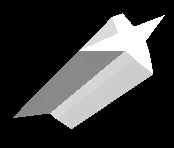 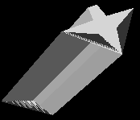
Immagine corretta e sbagliata si un IndexedFaceSet con
poligoni non convessi con "convex false" in FreeWRL (links) e
White_dune (destra)
Il problema con il "convex false" esiste anche nel nodo Extrusion.
Ci sono piu' errori di render quando si usano i nodi Extrusion.
La visualizzazione di oggetti multipli trasparenti puo' risultare
erronea.
Ci sono anche errori nella visualizzazione di qualche PROTO.
Naturalmente, se c'e' un'errore di visualizzazione di un oggetto nella
finestra 3d cio' non significa che ci sia un errore nel file VRML.
In caso di dubbi, usate File->Preview per lanciare un VRML
browser.
Il menu principale di white_dune è separato nei seguenti sotto-menu:
-
File
Questo sotto-menu permette di gestire i file, per caricare, inserire e
salvare file VRML/X3D. Esso può anche essere usato per esportare
in diverse varianti dei file VRML/X3D e in qualche altro formato
3D.
Il submenu File contiene anche una modalità per editare il
file corrente come testo senza ulteriori pannelli di dialogo di
apertura e salvataggio.
-
Modifica
Questo sotto-menu è usato per copiare, incollare, cancellare o cercare oggetti.
Esso contiene anche una voce di menu per il comando VRML/X3D "DEF".
questo comando è usato per assegnare un nome ad un oggetto
VRML/X3D. Esso può essere usato in una "ROUTE" per scambiare
messaggi tra oggetti VRML/X3D. Può essere anche usato dal
comando "USE" (anche disponibile sotto il
sotto-menu "Modifica"), che crea un puntatore
indistinguibile all'oggetto, come nel caso di un hard link UNIX.
-
Vista
questo sotto-menu è inteso per i settaggi sulla finestra usata e gli strumenti (o "toolbars").
In questa possibilità, per commutare tra finestra singola e toolbars, esiste anche una voce di menu Vista -> Schermo Intero,
che fa sparire tutti gli strumenti delle palette intorno alla palette
standard (ad.es. con icone per aprire e salvare) e mostra solo la
finestra 3D. Questo è molto utile per modellare un oggetto
3D o per navigare nel mondo 3D.
-
Crea
This submenu is intented for the creation of new VRML/X3D nodes.
The menu is orginised somewhat similar to the components of the X3D
standard, but only VRML97 nodes are organised this way.
VRML97 Amendment 1 nodes, X3D nodes, X3D draft nodes and extension
nodes for browsers like cover or kambi are seperated in own submenus.
-
Azioni
This submenu contains functions to change the VRML/X3D file.
A mayor part of this functions were designed cause they are not
available in a lot of 3D modellers (or not supported by their
VRML/X3D Export).
-
Converti
This submenu is intended to support the conversion between 3D objects.
There are two classes of conversions:
-
Shape conversion:
The conversion of shapes means the loss of information in almost
all cases. In a typical case, you start with a shape with only
few parameters like a sphere with only one parameter (radius)
or a scripted PROTO like SuperShape (with less than 20 parameters for
a complex object). The next step may be the conversion to a
Nurbs(Patch)Surface. A typical Nurbs(Patch)Surface has much more
parameters then a primitive or scripted PROTO (if you don't count
huge array of values as only one parameter). But unlike a
primitive etc., you can change small details of a Nurbs(Patch)Surface
easily.
The next step could be the conversion to a IndexFaceSet (mesh).
This also increases the possibilities to change details.
While a Nurbs(Patch)Surface can be changed via a few controlpoints,
a IndexFaceSet has usually much more vertices as details, that can be
changed. But the conversion also looses control, cause the change
of a controlpoint in a Nurbs(Patch)Surface can control a lot of
vertices of a shape.
The next possible steps only loose information: the conversion to
a IndexedLineSet only loose information about faces and the next
possible step, the conversion to a PointSet only loose information
about the connections between the vertices.
-
Interpolator creation:
This menupoints creates Position- and OrientationInterpolators from
a NurbsCurve. Unlike the conversion of shapes, the new created
interpolator do not replace the NurbsCurve. The new created interpolator
is not connected to other nodes. To use it for a animation, it
need to be connected to a TimeSensor and a target node with the
following Routes menu.
-
Routes
This submenu is used for VRML/X3D ROUTE commands.
The chapter about Input/erase of ROUTEs
discribe this submenu.
-
Modo
This submenu is used to set navigation and input modes.
-
Opzioni
This submenu is used to change settings.
-
Help
This submenu shows helppages with a HTML webbrowser.
-
! (opzionale "teacher menu")
Questo sottomenu è disponibile soltanto se il porgramma è
stato compilato con questa opzione. Esso è usato per marcare
costrutti giusti e sbagliati.
Nella finestra 3D, avete tre modalita' di navigazione.
- Shift-Mouse 1: Zoom View
- ctrl-Mouse 1: Rotate View
- Shift-ctrl-Mouse 1: Move View
Inoltre, dalla versione 0.16 avete una navigazione stile Silicon Graphics.
Tenete conto che un windowmanager non configurato puo' limitare tutti gli
input del mouse che usino il tasto Alt...
- Alt-Mouse1: Rotate View
- Alt-Mouse2: Move View
- Alt-Mouse1-Mouse2: Zoom View
Quando e' attivo un "6D inputdevice" ed e' selezionata l'icona
della Scena 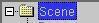 nell'albero della Scena, la
navigazione dipende dalle icone di trasformazione 
 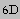 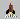 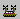 nel file VRML.
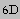 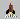 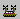 nel file VRML.
Il modo piu' semplice per modificare il Grafo della Scena (SceneGraph) e'
aggiungere un nuovo nodo cliccando sull'icona del corrispondente nodo
VRML.
Per identificare l'icona corrispondente ad un nono VRML, muovete il mouse su
di esso ed aspettate. Un testo descrittivo di verra' mostrato sulla
barra di stato in basso della finestra di White_dune.
White_dune provera' ad includere il nuovo nodo nel punto di selezione
dello scenegraph,
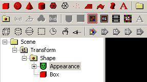
oppure nella root dello scenegraph (icona "Scene").
White_dune mettera' in grigio tutte le icone dei nodi che sono impossibili da
aggiungere.
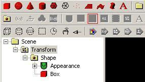
La seguente tabella mostra le richieste per questi nodi nello standard VRML97
:
- Appearance vuole Shape
- Material vuole Appearance
- ImageTexture vuole Appearance
- MovieTexture vuole Appearance (oppure Sound)
- PixelTexture vuole Appearance
- TextureTransform vuole Appearance
- Coordinate vuole IndexedFaceSet oppure IndexedLineSet oppure
PointSet
- Color vuole IndexedFaceSet o IndexedLineSet o PointSet
- Normal vuole IndexedFaceSet
- TextureCoordinate vuole IndexedFaceSet
- FontStyle vuole Text
- AudioClip vuole Sound
Per esempio un nodo Appearence deve essere selezionato, per includere una
ImageTexture, oppure una Shape deve essere selezionata per includere un'
Appearence.
Tutti i campi dei nodi corrispondenti nel VRML97 sono di tipo SFNode,
altrimenti puo' essere inserito un solo nodo. Un icona e' anche grigia, se
c'e' gia' un corrispondente nodo.
Per esempio, non potete includere due nodi ImageTexture in
un Appearence. Cosi' l' ImageTexture e' anche in grigio, se un
nodo Appearence e' selezionato, ma c'e' gia' un nodo ImageTexture
contenuto.
Secondo lo Standard VRML97 i nodi Box, Sphere, Cone, Cylinder,
IndexedFaceSet, IndexedLineSet, PointSet, ElevationGrid, Extrusion e Text
hanno bisogno di un nodo "Shape". In tutti i casi, la struttura necessaria
per l'uso di questo nodo Shape.geometry e' chiara. Infatti il click
sulle icone e l'uso del menu Create -> Shape ->
vocedelmenu costruisce una Shape-struttura (che include un
sovrastante nodo Transform).
(Nuovo nella Versione 0.29beta) In caso di creazione di un nodo, se
l'elemento selezionato non e' una Shape di cui il nuovo nodo possa far
parte, il sovrastante nodo Transform viene riempito in modo che il nuovo nodo
venga mostrato direttamente di fronte all'attuale punto di vista.
I comandi Edit -> copy,
Edit -> paste and Edit -> delete funzionano in
maniera simile agli stessi comandi negli altri programmi. Se l'ultimo click
del mouse e' stato fatto nell'albero della scena ("Scene Tree"), questi
comandi possono essere usati per modificare lo scenegraph come ci si aspetta.
Un comando inusuale e' Edit -gt;
copy branch to root. Esso copia tutti i nodi lungo il percorso alla
radice ("root") dello scenegraph corrente nel buffer. Questo puo' essere
veramente utile, se avete bisogno di duplicare e spezzare un ramo dello
scenegraph.
Un altro modo per modificare lo scenegraph e' di trascinare parti di
esso con il mouse.
White_dune vi mostrera' l'icona di un segnale di stop, se il nodo di
destinazione non e' possibile.
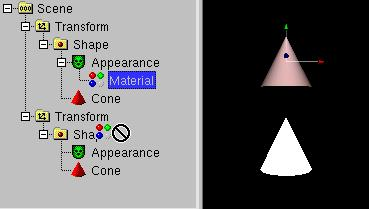
Se il nodo di destinazione e' possibile, White_dune mostrera' il normale
puntatore del mouse.
La destinazione non e' possibile, se ci sono campi SF/MFNode multipli nel
nodo finale.
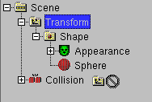
I nodi con campi multipli di tipo SF/MFNode (per es. il nodo "collision")
mostrano sempre i nomi dei campi nello "scenetree" (a meno di un
settaggio contrario nel pannello Options -> Preferences); in
questo caso potete usare i nomi dei campi come destinazione .
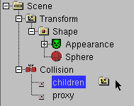
In maniera simile al copy/move del programma explorer di M$Windows2000, e
simili filemanager, e' possibile modificare il behaviour, se e' usata la
tastiera quando il mouse e' ancora in trascinamento:
- Move:
la tastiera non e' premuta oppure il tasto Shift e' premuto (l'icona non
cambia)
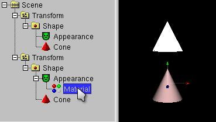
- Copy:
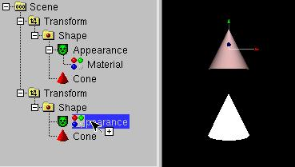
Crtl key premuto (icona aggiunge l'immagine "+")
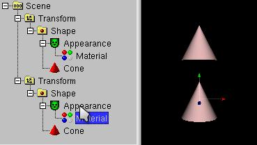
- DEF/USE:
Crtl key e Shift key premute insieme (icona aggiunge immagine "freccia")
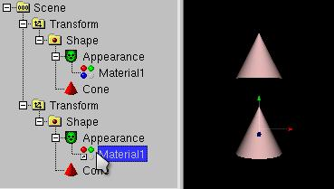
(nuovo nella Versione 0.29beta)
Al di la' del metodo drag and drop descritto sopra, c'e' un altro modo
di usare il costrutto USE. Il costrutto USE e qualcosa di simile ad un
puntatore, il riuso di un nodo gia' esistente. Il nodo USE deve essere
definito da un nodo DEF, seguito dal nome, che puo' essere applicato con
Edit -> DEF. L'uso di Edit -> USE (se
possibile) aggiunge un nuovo USE dell'ultimo nodo DEF, nel punto del nodo
selezionato.
Se modificate il nodo DEF, il nodo USE e' anche modificato.
Se modificate il nodo USE, il nodo DEF e' anche modificato.
In White_dune (eccetto quando usate un text editor su un VRML97 file), potete
legalmente cancellare il nodo DEF. Il primo nodo USE scritto formalmente
diventera' il nuovo DEF, dato che il costrutto DEF/USE e' di puntatori
indistinguibili.
L'uso di USE e' utile per rendere i file VRML piu' piccoli (scaricabili piu'
velocemente), facilita le possibilita' di manutenzione e puo' essere usato
per un rendering piu' veloce da un browser VRML intelligente.
Ulteriori comandi, che possono create costrutti USE sono gli array tool e altri tra le seguenti operazioni "create"
scenegraph.
(nuovo nella Versione 0.27beta)
Non c'e' alcun modo di muovere nodi multipli nello scenegraph (ancora). Un
modo per scavalcare questo e' l'uso di operazioni che possono essere
applicate a tutti i nodi dello scenegraph che seguono il nodo selezionato
(compreso il nodo stesso).
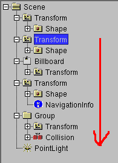
Ci sono comandi disponibili sotto Actions -> Rest of scenegraph
branch:
- Muovi verso ("Move to")
Questo comando sposta i nodi in un nodo di raggruppamento (come Group,
Transfrom etc.)
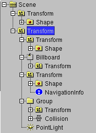
E' anche possibile inserire i nodi in un nuovo file VRML97 ed usare
questo file attraverso il comando Inline, ma solo se non c'e' alcun ROUTE
che ha uno o piu' nodi come destinazione oppure se e' usato un nodo
USE.
- Muovi di un livello sopra
Questo comando sposta i nodi dello stesso ramo dello scenegraph verso il
genitore del nodo selezionato.

- Azioni -> Muovi il resto dello scenegraph di un livello sopra
("Actions -> Move rest of scenegraph branch 1 level up ")
Questo comando sposta i nodi dello stesso ramo dello scenegraph
verso il genitore del nodo selezionato.
- Crea
Questo comando crea un nuovo nodo (ImageTexture, Material, Appearance,
Normal ecc.) in ogni posto possibile nel ramo dello scenegraph. Tutti i
nodi vengono creati all'interno di un nodo Shape. Si deve stinguere
tra nodi che rientrano sotto il campo "appearance" della Shape
(ImageTexture, Material und Appearance) e nodi che rientrano nel campo
"geometry" della Shape (Normal, TextureCoordinate). Per i nodi del campo
"appearance", viene creato un nuovo nodo nella prima possibilita'
esistente nello scenegraph e per tutte le possibilita' seguenti il nodo
e' riutilizzato attraverso USE. Questo rende possibile modificare il
colore, il materiale e la texture di un intero scenegraph con il minimo
sforzo. Nodi che rientrano nel campo "geometry" della shape verranno
generati secondo i dati necessari della Shape (per.es. un
IndexedFaceSet).
- Set
Questo comando modifica alcuni campi (creaseAngle, transparency, ecc.)
nel ramo dello scenegraph, che influenzano la vista di una shape shape e
possono essere facilmente cambiati.
- Rimuovi
Questo comando rimuove alcuni nodi (ImageTexture, Material, Appearance,
Normal ecc.) nel ramo dello scenegraph. Molti dei nodi sono
corrispondenti ai nodi nel comando Crea, dato che esso puo'
inserire solo nodi, se il campo corrispondente non e' bloccato da un nodo
gia' esistente. Cosi' il comando Rimuovi puo' essere il
primo passo per cambiare i valori nel ramo dello scenegraph.
-
Show polygons/primitives in status bar Questo e' un comando
informativo e non cambia nulla nello Scenegraph. Puo' essere usato
per trovare pa parte dello scenegraph che contiene il piu' grande numero
di poligoni/primitive. Cio' e' molto importante per trovare problemi di
efficienza nei dati 3D per il tempo reale. Primitive sono nodi
come Box, Cone, Cylinder and Sphere. Per le Primitive, il
numero dei poligoni usati nel Browser VRML dipende dal Browser VRML
stesso. Per esempio, un VRML Browser puo' usare 16 poligoni per disegnare
la superficie superiore di un cilindro di bassa qualita' oppure puo'
usare 32 poligoni per una qualita' miigliore.
Una sfera generalmente usa numerosi poligoni in piu' di una Box.
Per trovare la parte di scenegraph che contiene il maggior numero di
poligoni/primitive, potete usare un algoritmo di ricerca binaria:
Cliccate sull'icona della scena sulla radice dello scenegraph
ed usa "Actions -> Rest of scenegraph branch -> Show
polygons/primitives in status bar". Il risultato e' il numero dei
poligonsi/primitive nell'intero VRML file. Selezionate un
nodo posto approssimativamente nella meta' del corrente livello del
ramo dello scenegraph ed usate "Actions -> Rest of
scenegraph branch -> Show polygons/primitives in status
bar".
Se il numero e' piu' grande della meta' del risultato dell'ultimo
comando, la maggioranza dei poligoni/primitive e' nella parte superiore
del livello corrente del ramo dello scenegraph. Continuate con il
comando alla meta' approssimativa della parte superiore del livello
corrente del ramo dello scenegraph.
Se il numero e' inferiore della meta' del risultato dell'ultimo
comando, la maggioranza dei poligoni/primitive e' nella parte inferiore
del corrente livello del ramo dello scenegraph. Continuate con il
comando alla meta' approssimativa della parte inferiore del corrente
ramo dello scenegraph.
Continuate con questo schema, usando la meta' della parte rimanente
dell'ultimo comando, finche' non troevrete o il nodo, o il gruppo di
nodi che contiene la maggioranza dei poligoni/primitive nel vostro
file. Il nodo (o il gruppo di nodi) (per es. se e' un
nodo Group o Transform) puo' esso stesso contenere molti altri nodi. Se
cliccate sul sel segno + nell'albero della scena di qualche nodo,
potete aprire un nuovo livello nel ramo dello scenegraph. Se avete
bisogno di continuare la ricerca della parte con il maggior numero
di poligoni/primitive, usate Actions -> Rest of scenegraph
branch -> Show polygons/primitives in status bar e continuate
con il secondo step.
Sfortunatamente, alcune di queste operazioni sono (ancora) molto lente.
In White_dune, ci sono due differenti settaggi, che guidano il modo in cui
inserire una ROUTE.
- In Options -> RouteView Settings... il checkbox per "Show
all nodes in Routeview" e' settato:
Tutti i nodi nella scena sono mostrati nel routeview.
Questo e' utile per lavorare con file VRML piccoli, ma con file VRML
con un sacco di nodi, puo' essere terribile cercare la giusta icona.
- In Options -> RouteView Settings... il checkbox per "Show
all nodes in Routeview" non e' settato:
Solo i nodi con ROUTE gia' esistenti sono mostrati nella routeview.
Per poter vedere un nodo senza ROUTE nella Routeview, dovete selezionare
il nodo nell'albero della scena ed usare il comando Route -> show
node on top.
I ROUTE sono creati in White_dune cercando l'icona a destra nella finestra
RouteView (se cliccate sulle icone, viene selezionata l'icona corrispondente
nell'albero della scena (usare "Route -gt; Move node to top" puo'
essere utile) e cliccate sui box dell'evento corrispondente. Viene mostrato
il nome dell'evento, e potete disegnare una linea fino al prossimo
evento/icona.
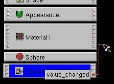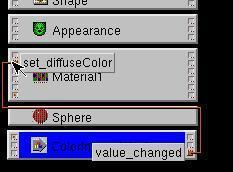
Come richiesto dallo standard VRML, solo gli eventi dello stesso tipo
(stesso colore dei box) possono essere connessi.
Per cancellare una ROUTE, semplicemente tagliate la linea.
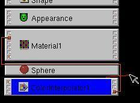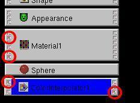
Come suggerimento per i principianti, alcuni box degli eventi sono marcati
con un puntino rosso, che sta ad indicare gli eventi importanti o piu'
spesso usati.
Naturalmente l'importanza/uso degli eventi puo' differire dal task del tuo
mondo VRML world. Tutti i nodi sensori (i sorgenti originari del
processamento degli eventi) hanno i box degli eventi con i punti rossi.
In complessi mondi VRML con un gran numero di oggetti (per esempio i file
VRML esportati da programmi di modellazione 3D come Wings3D, Blender,
AOI, Catia, 3D Studio Max, Maya ecc.) puo' essere difficoltoso cercare i
nodi VRML nella finestra RouteView.
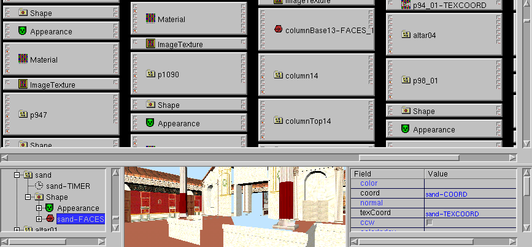
Ci sono operazioni che permettono di saltare al nodo selezionato (con
Routes -> Unzoom/jump to selection )
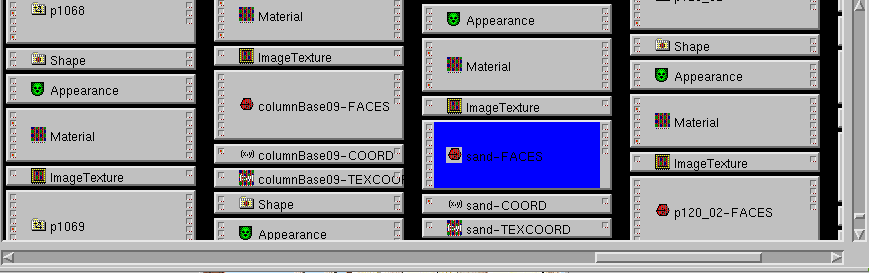
oppure zoomare all'esterno della Routeview (con Routes -> Zoom
out)
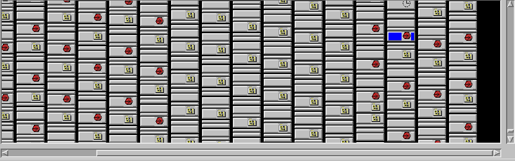
ma in questi casi, e' raccomandato l'uso del nodo VRML Inline. Questo
puo' essere usato per inserire oggetti statici (per esempio parti del
paesaggio o parti di forme rigide) nei propri VRML file. Come risultato il
completo mondo VRML puo' consistere di un piccolo numero di nodi VRML.
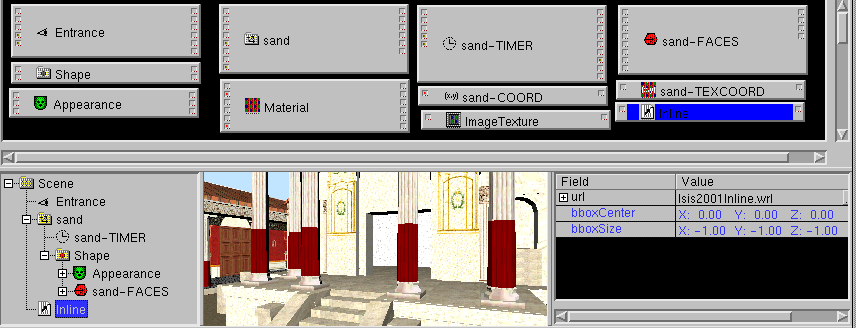
Comandi con l'automatica generazione di ROUTE
Ci sono due comandi che generano automaticamente nuovi ROUTE.
- Action -> animate
Con questi comandi saranno generati i ROUTE per
TimeSensor -> *Interpolator -> nodo selezionato
Dopo l'uso di questo comando, si aprira' un pannello che chiedera' per
quale TimeSensor deve essere costruito oppure quale TimeSensor
esistente deve essere usato. Il pannello chiede anche quale evento di
destinazione (canpo), nel nodo selezionato, deve essere usato. In base al
tipo di evento di destinazione verra' generato un
nuovo Interpolatore.
- SFFloat: ScalarInterpolator
- SFVec3f: PositionInterpolator
- SFRotation: OrientationInterpolator
- SFColor: ColorInterpolator
- MFVec3f: CoordinateInterpolator
(eccetto quando la destinazione e' un nodo Normal, nel qual caso
sara' generato un NormalInterpolator)
Quando il valore di un evento di destinazione puo' essere letto, una
nuova coppia key/keyValue con key=0.0 e keyValue=value_target_field
verra' settata.
- Action -> add Interaction (nuovo nella Versione
0.29beta)
In questo caso, verra' generato il ROUTE
Sensor -> selected node
Poiche' ci sono piu' di una possibile destinazione di evento nel nodo
selezionato e differenti dagli Interpolatori, la assegnazione tra tipi di
evento di destinazione e sensore e' ambigua tra molte possibilita', molte
delle quali hanno senso. Cosi' ci sono due Liste: un Listbox che
potete usare per selezionare tra gli eventi raccomandati e tutti gli
eventi, ed un listbox, in cui potete selezionare i sensori gia'
esistenti.
In una finestra ci saranno i checkbox con tutti i sensori
eventi/destinazione eventi combinazioni per una nuova interazione,
secondo la selezione dei listbox.
Esiste piu' di un modo di modificare i valori dei campi:
- Input da tastiera
Cliccando con il mouse sul valore corrispondente e rilasciando il
bottone. Si aprira' una finestra di input per inserire i valori con la
tastiera.
- Input con il Mouse
Premendo il tasto sinistro sul valore corrispondente e non rilasciando il
bottone, ma muovendo il puntatore del mouse a destra o sinistra. In
questo modo verra' incrementato o diminuito il valore.
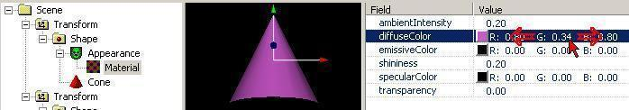
- Cambiare "MF"-FieldValues(nuovo
nella versione 0.27beta)
Nella finestra dei parametri o campi ("fieldview"), un segno "+" alla
sinistra di un campo "MF" , come MFFloat, MFInt32, MFVec3f, MFRotation,
MFString ecc. I campi "MF" sono tabelle di dati, di cui potete osservare
il contenuto: primo, secondo, terzo, ecc.
Per mostrare/modificare il contenuto di un campo "MF", dovete cliccare
sul carattere "+" alla sua sinistra.
Come in un file VRML, un campo "MF" con un solo dato e mostrato in
maniera simile ad un normale campo "SF" ("single field").
Per aggiungere dati ad un campo "MF", dovete cliccare sulla seconda
colonna dei caratteri "+". Un nuovo dato sara' inserito sulla riga
seguente della tabella.
Per inserire al primo punto, cliccare sul lato destro della finestra
"fieldview" prima del primo campo"MF" aperto.
Per cancellare da un campo "MF", cliccate sul lato sinistro della
"fieldview " alla riga con i dati che volete eliminare ed usate il menu
Edit -> delete.
- Modificare i FieldValue nella finestra 3D
Preview
Le modifiche nella finestra 3D Preview sono anche una modifica dei
campi fieldvalues. Principalmente, sono modificati i nodi
transform.
Durante il lavoro interattivo con il mouse nella finestra 3D Preview, le
icone 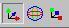 selezionano tra
- traslazione
- rotatione
- scala

- sposta il centro
 (nuovo nella
versione 0.19beta)
(nuovo nella
versione 0.19beta)
Tenete conto che non e' possibile usare queste funzioni, quando
non esiste il nodo transform 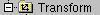 nel
ramo dello scenegraph.
All'interno del nodo Transform, anche altri campi possono essere
modificati nella finestra 3D Preview. This is about moving small white
boxes, like in Box, Cone, Cylinder, Sphere, ElevationGrid, Extrusion,
PointLight or the VRML97 Amendment 1 NurbSurface/NurbsCurve Nodes.
- 6D Input (nuovo nella versione
0.19beta)
Fino dalla versione 0.19beta White_dune supporta 6D inputdevices (6D
sta per 6 gradi di liberta'degrees of freedom) sotto Unix/Linux.
E' premuto, potete spostare un nodo Transform (e gli oggetti
contenuti) in tutti e 6 i gradi di liberta'. L'icona
limita il movimento alle traslazioni, l' icona
limita alle rotazioni.
Il classico 6D inputdevice e' la spaceball, una sorta di joystick che
permette solo piccole escursioni, ma in tutte le direzioni, incluse
rotazioni.
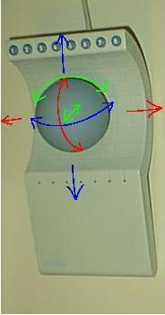
Se, per esempio, premete la parte alta della spaceball, l'oggetto si
spostera' verso il basso. Quando girate la spaceball, l'oggetto seguira'
questo movimento.
La configurazione delle 6D inputdevices (ancora) funziona esclusivamente
attraverso parametri da riga di comando. A secondo del tipo di 6D
inputdevice una scala di valori di input e' necessaria, per esempio:
white_dune -xinput spaceball -allxyz=20,200 -allrot=40,400
E' anche possibile cambiare la scala delle inputdevices quando il
programma sta girando. Usete Mode -> Inputdevice -> Increase
input device (icona ) oppure Mode ->
Inputdevice -> Decrease input device (icona ).
Se limitate il movimento alle translazioni (),
solo la "allxyz" scala e' cambiata. Se vi limitate alle rotazioni , solo la scala "allrot" e' cambiata.
Attraverso il protocollo Xinput, sono supportati anche Linux joystick e
libsball. Per dettagli sui parametri da riga di comando, vedete la pagina del manuale.
Un altra 6D inputdevice e' composta dalle "dial" (per es. disponibile
sotto SGI IRIX). Per default, gli assi di input sono sistemati in modo
abbastanza scomodo.
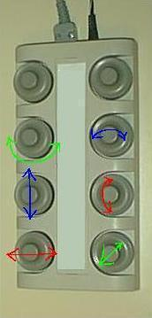
Attraverso i parametri della linea di comando
white_dune -xinput dialbox-1 -x=0 -y=2 -z=4 -xrot=1 -yrot=3 -zrot=5 -all=100,100,wheel
potete cambiare gli assi.
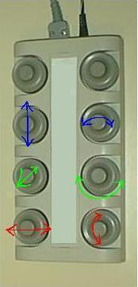
- 6D Local Mode Input: Conoscete i
piani RC ? (nuovo nella versione 0.19beta)
Quando e' premuta l'icoma 6Dlocal 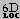 ,
potete agire attraverso gli assi locali di un nodo transform.
Per esempio, potete muovere una spaceball nella direzione z ("verso lo
schermo") e il nodo transform (e gli oggetti contenuti) si muove verso la
direzione del suo asse z locale, seguendo la freccia blu Z. Per esempio,
ancora, se muovete una spaceball nella direzione y ("sopra") il
nodo transform (ed i suoi oggetti contenuti) si muoveranno nella
direzione del suo asse y locale, seguendo la freccia verde y.
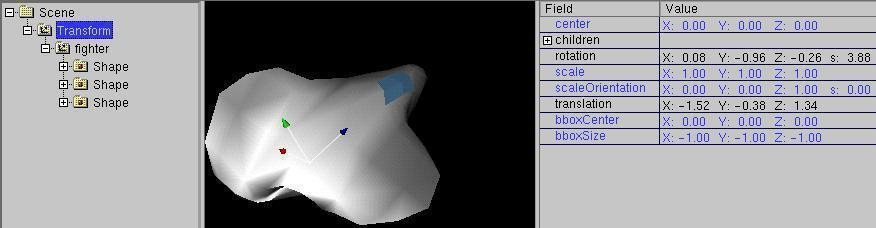
Questo e' utile quando oggetto e nodo transform sono sistemati in maniera
simile. Normalmente l'oggetto non e' nella direzione della freccia del
suo nodo transform.
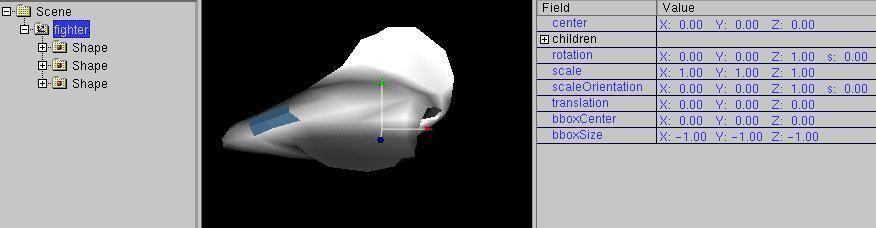
Tuttavia il nodo transform puo' essere ruotato in nodo da corrispondere
alla rotazione dell'oggetto.
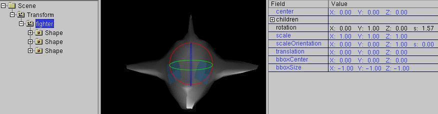
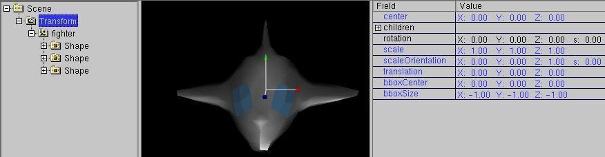
Quando usate questo tipo di manipolazione, vedrete un effetto, che non
sorprende gli utenti dei piani RC: Se l'oggetto sta spostandosi
verso di voi, un rollio verso sinistra della spaceball fa ruotare verso
destra l'oggetto.
Una modalita' simile e' il razzo ("the rocket ").
In modalita' rocket, le traslazioni sono solo permesse nella direzione z.
Questo e' utile se volete manipolare un oggetto su un percorso
permettendo tutti i tipi di rotazione.
Una modalita' simile e' l'overcraft ("hover") . In modalita' hover, sono permesse solo le
rotazioni intorno al'asse y locale. Questo e' utile se volete muovere un
oggetto lungo un piano.
Altre modalita' che funzionano sugli assi locali sono la scala e il centro .
-
Mindstorms NXT dials Input:
Un device autocostruito molto simile ai dials SGI puo' essere facilmente
realizzato con il Mindstorms NXT set.
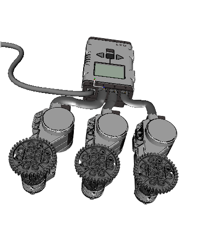
Semplicemente, attaccate una rotella a ciascuno dei 3 motori
Mindstorm NXT, collegate i motori con il NXT brick, connettete il
NXT brick con il vostro Computer via USB e potrete usare il risultato
come un device di input USB.
L'accesso e' effettuato con la libusb, che puo' avere bisogno di
una configurazione aggiuntiva, per es. uno pseudo-filesystem conosciuto
come 'usbdevfs` oppure 'usbfs` montato sotto /proc/bus/usb di Linux.
Per accedere alle funzioni libusb senza i diritti di root, avrete bisogno
di configurazioni aggiuntive, per es. di una modifica della
configurazione udev di Linux (
tools/nxt_udev.sh).
La linea di comando da usare per il primo brick connesso alla porta
USB:
dune -nxtdials 0 -all=,,wheel
- Linux joystick Input:
Sfortunatamente, le 6D inputdevices non sono molto diffuse. Per questo,
White_dune sotto Linux supporta anche i joystick.
Ci sono molte device (incluse le spaceball), che possono essere
usate sotto Linux come joystick. Bisogna distinguere tra 6D (per es.
Labtec Spaceball), 4D (es. gamepads con 2 thumbsticks), 3D (z.B. joystick
con un twisting stick (es. Micro$oft Sidewinder Pro)) e "normali" 2D
joysticks.
A volte, un joystick axis sembra non essere molto utile (come il
controller extra del Micro$oft Sidewinder Pro).
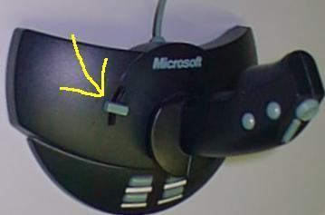
Cosi', il numero degli assi puo' essere limitato. Per usare, ad esempio,
il Micro$oft Sidewinder Pro come 3 axis joystick, potete usare l'opzione
-axis nella linea di comando.
white_dune -joystick /dev/input/js0 -axes=3
Le Gamepads sono spesso sovraffollate con assi non molto utili. Ad
esempio, il Logitech Wingman Cordless Gamepad riporta 9 assi quando e'
provato con il programma jstest. Per usare i 6 assi buoni (2 thumbsticks
ed i cross-hairs), dovete cambiare l'assegnazione degli assi dalla riga
di comando.
white_dune -joystick /dev/input/js0 -y=4 -z=-1 -xrot=6 -yrot=3 -zrot=5
Dovete interpretare l'opzione "-z=-1" in questo modo: l'asse z sara'
assegnato al numero 1 (cioe' l'asse 2. , contando a partire da 0),
ma la direzione dell'input e' invertita.
- M$Windows joystick Input:
Il supporto di un M$Windows joystick e' molto simile ad un Linux
joystick.
Le speciali qualita' dei joystick driver rilasciati con M$Windows
non dovrebbero farvi meravigliare, se, ad esempio il 2. thumbstick di un
gamepad non rilascia valori oppure un asse del joystick sara' riportato,
ma rilasera' solo errori.
Ma a parte questo, la superiorita' degli autori delle API di un M$Windows
joystick API si coglie dal fatto, che un errore va interpretato come un
completo ritorno (un problema simile all'esplosione del primo missile
Ariane 5 ....).
Cosi' dovete iniziare un testo sotto M$Windows con solo 2 assi. Per il
primo M$Windows joystick (number 0) la riga di comando e' qualcosa di
simile a quella seguente:
white_dune.exe -joystick 0 -axes=2 -none=2 -allxyz=20,,,0.000001 -allrot=0.2,,,0.0000001
- Cambiare FieldValues nella finestra
ChannelView
La Finestra ChannelView e' usate per mostrare o cambiare nodi di
interpolazione. In un nodo di interpolazione, i valori di input tra 0 ed
1 sono assegnati ad un range di valori di uscita.
Interpolatori sono usati nel VRML per semplici animazioni nella forma
ROUTE TimeSensorDEFNAME.fraction_changed TO ???InterpolatorDEFNAME.set_fraction
ROUTE ???InterpolatorDEFNAME.value_changed TO ???DEFNAME.set_???
L'output "fraction_changed" di un nodo TimeSensor (valori rilasciati
compresi tra 0 and 1) sono instradati verso l'evento di input
"set_fraction"di un nodo di interpolazione. Il nodo di interpolazione
seleziona un valore corrispondente intermedio tra i valori di output Il
risultato puo' essere instradato verso un altro nodo VRML, this leads to
a animation without jerk.
Nel seguente esempio:
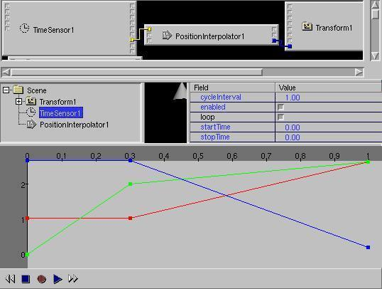
l'output di un PositionInterpolator con i valori di input 0, 0.3, 1
e quelli di output x=1 y=0 z=3, x=1 y=2 z=3, x=3 y=3 z=0 viene
instradato all'Input set_translation di un nodo transform. Per
esempio, il nodo transform (e l'oggetto contenuto) si muovera'
nell'intervallo timecycle tra 0 e 0.3 per y=0 fino a y=2 (in alto).
Alcune animazioni di interpolazione possono essere create
inWhite_dune attraverso modifiche nella finestra 3D Preview. Animazioni
basate su PositionInterpolator/Transform.set_translation e
OrientationInterpolator/Transform.set_rotation possono anche essere
create con la registrazione di un 6D inputdevice.
Se volete lavorare con i tool  come quelli
di un VideoRegistratore VCR (record e playback animations) devono essere
vere le seguenti condizioni:
come quelli
di un VideoRegistratore VCR (record e playback animations) devono essere
vere le seguenti condizioni:
Fino dalla versione 0.27beta e' presente in White_dune un menu
Actions -> Animate, che crea questa struttura per il nodo
selezionato (solo quando il nodo ha EventIn/ExposedField-Felder del
tipo corrispondente all'interpolatore). Con Actions
->Animate viene proposto il pannello

che permette di scegliere, se un nuovo TimeSensor, con quale tempo di
animazione va creato oppure, nel caso di TimeSensor gia' esistenti,
quele va usato e quali campi andrebbero animati.
Quando viene premuto solo il bottone di registrazione  , durante la creazione di una animazione, dovete
prima cambiare il cursore del tempo e dopo inserire il valore (via
tastiera, mouse oppure 6D inputdevice).
, durante la creazione di una animazione, dovete
prima cambiare il cursore del tempo e dopo inserire il valore (via
tastiera, mouse oppure 6D inputdevice).


Quando il bottone rosso di record e' premuto insieme al bottone del
triangolo play , il cambiamento dei valori (via
mouseinput o 6D inputdevice) e' registrato in
continuazione.

La registrazione del mouseinput richiede una mano calma. E' abbastanza
facile cancellare senza volere alcuni dei valori gia' registrati.

Dovete selazionare un time range premendo il tasto sinistro del
mouse e trascinandolo a sinistra/destra nella finestra channelview e
dopo usare il menu Edit -> delete oppure l'icona di
cancellazione.

I valori corrispondenti verranno cancellati.

- Cerchio dei Colori (nuovo nella
Versione 0.19beta)
C'e' uno speciale pannello di input per i colori, che prende il posto
della finestra fieldView. Per visualizzare il pannello, deve essere
selezionato un campo colore nella finestra fieldView e deve essere
premuta l'icona del Colorcircle.
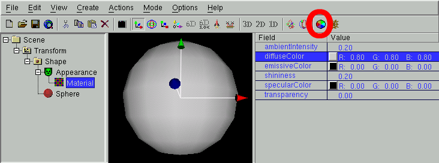
Con un click del mouse, potete selezionare un colore color nel cerchio e
nella barra vicino ad esso, in cui potete scegliere una variante piu'
scura.
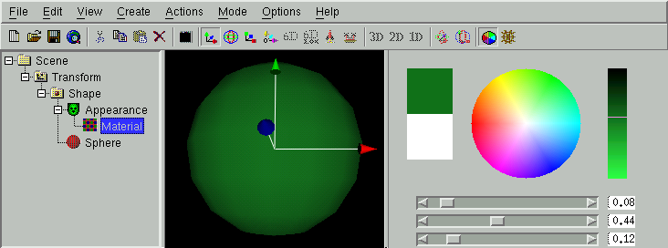
Attualmente, quando non state usando un monitor true/directcolor su
Unix/Linux, il display del color circle risultera' lento....
Quando viene premuto il bottone "OK" , ritornera' la visualizzazione
della normale finestra fieldView.
- Script Editor (nuovo nella
Versione 0.22beta)
Ci sono due modi per far partire lo scripteditor:
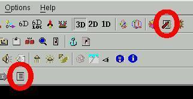
- Per creare un nuovo scriptnode:
Attraverso l'icona "Script" (menu Create ->
Programming -> Script),
- Per modificare un nodo si Script gia' esistente.
Se e' selezionato un nodo di script, attraverso l'icona "Object Edit"
(menu Actions -> Object edit),
Il pannello dello scripteditor
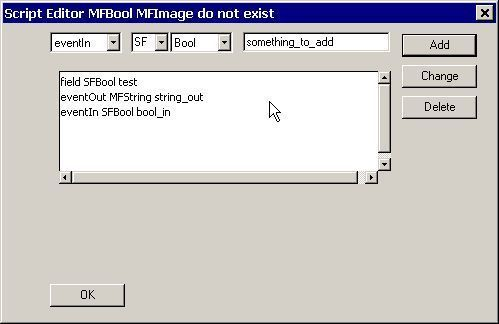
permette di aggiungere nuovi campi/eventi al nodo di script (add), di
cambiarli (change) oppure di cancellarli (delete).
Per terminare il lavoro sul nodo di script, premete il bottone Accetta
("OK").
- URL Editor (nuovo nella Versione
0.22beta)
Il campo "url" (puo' contenere il codice ECMAscript (javascript) di
un nodo di script) puo' essere modificato con un texteditor.
Attraverso il menu options -> Texteditor Settings e'
possibile selezionare il texteditor.
Quando il campo "url" e' vuoto, verranno creati degli schemi per gli
ECMAscript.
Per entrare in edit dello script, selezionate il nodo di script ed usate
l'icona "URL Edit" (menu Actions -> Url edit).
-
Field pipe(nuovo nella versione
0.29beta) Uno dei piu' potenti modi per modificare i valori dei
campi e' la cosiddetta "field pipe". Questa permette di cambiare i valori
dei campi attraverso qualche programma esterno.
Usualmente non esiste ancora un programma esterno corrispondente, e cosi'
la "field pipe" e' importante soprattutto per utenti con capacita' di
programmazione.
Se si seleziona un campo SFField oppure MFField nella finestra fieldview
ed usate
"Actions -> field pipe", una linea con il valore del
campo viene scritto in un file, nel caso of a SFField. Nel caso di un
MFField verranno scritte nel file tante linee quanti sono i valori SF nel
campo MFField.
Per esempio, selezionando il seguente campo TextureTransform.scale
(un campo SFVec2f), i valori
1 1
saranno scritti nel file.
Per esempio, se viene selezionato il seguente campo Color.color
(un campo MFColor) i valori
0 0.5 0
0.5 0 0
0 0 0.5
0.5 0.5 0
0.5 0 0.5
0 0.5 0.5
verranno scritti nel file.
Il file terminera' con un carattere newline.
Quando si usa Actions -> field pipe, viene aperto un
pannello, che chiede all'utente una riga di comando. La riga di comando
puo' essere usaata per far partire un programma compilato (per
esempio, scritto in un linguaggio di programmazione come Ada, C, C++ o
Fortran) oppure un interprete con un programma in un
linguaggio interpretato (come, ad esempio, in un linguaggio di
programmazione come awk, perl o python).
La riga di comando data e' lanciata in questo modo:
commandline < file > outputfile
che esegue ogni linea del file come standard input
della commandline e scrive lo standard output risultante all'interno
di outputfile.
Se il file di output scritto ha la stessa/corrispondente struttura del
campo/fileInput (per esempio, per il campo SFVec2f
2 1
o per il campo MFColor di esempio
1 0.5 0
0.5 1 0
0 0 0.5
0.5 0.5 0
0.5 0 0.5
0 0.5 0.5
ove e' importante che i valori Color siano campi in virgola mobile nel
range tra 0 ed 1. Il contenuto del file di output e' usato come nuovo
fieldvalue ed i file intermedi di input/output vengono rimossi.
Il piu' semplice esempio di una "field pipe" e' l'uso di un semplice
comando "echo" di sistema.
La riga di comando
echo some th ing
scrive semplicemente gli argomenti
some th ing
In un esempio molto semplice, questo puo' essere usato per cambiare i
valori "1 1" in "2 1", usando
echo 2 1
come riga di comando nel pannello del "field pipe".
Per il seguente piu' complicato (ma piu' realistico) esempio, e' stato
usato il linguaggio di programmazione awk, un linguaggio interpretato
molto simile al linguaggio C. Awk e' molto utile per questo scopo,
perche' spezza la linea di input automaticamente in valori ed accetta
programmi completi dati sulla riga di comando.
Se voi usaste la seguente riga di comando
awk '{print $1 + 0.1 , $2 + 0.2 , $3 + 0.35}'
come "field pipe" per il seguente campo MFColor
0 0.5 0
0.5 0 0
0 0 0.5
0.5 0.5 0
0.5 0 0.5
0 0.5 0.5
il risultato sarebbe
0.1 0.7 0.35
0.6 0.2 0.35
0.1 0.2 0.85
0.6 0.7 0.35
0.6 0.2 0.85
0.1 0.7 0.85
Per esempio se questo campo MFColor fosse usato come colore per i bordi
di un Box IndexedFaceSet, il comando renderebbe tutti i colori dei bordi
un poco piu' luminosi, un po' piu' verdi ed un po' piu' blu.
Lo stesso esempio, scritto in linguaggio C richiederebbe il seguente
listato:
#include
int main(int argc, char** argv)
{
while(!feof(stdin)) {
float c1, c2, c3;
scanf("%f %f %f", &c1, &c2, &c3);
printf("%g %g %g\n", c1 + 0.1, c2 + 0.2, c3 + 0.35); }
return 0;
}
Il testo andrebbe salvato in un file chiamato "main.c", e sarebbe
necessario compilare il file, ad esempio con il comando
cc -o /tmp/a.exe main.c
ed otterreste un programma da eseguire con
/tmp/a.exe
nel pannello della "field pipe" di White_dune.
Scriptbuilding semplificato (nuovo
nella Versione 0.22beta)
Prima di usare il pannello dello scripteditor, e' necessario pianificare
quali sono i datatypes e le informazioni eventIn/eventOut dei nodi che
volete connettere. Per fare questo, avete bisogno di leggere la descrizione
dei nodi dello
standard VRML (potete, per esempio, usare il menu
Help -> nome del
Nodo attualmente selezionato oppure un libro avanzato).
Per una veloce sperimentazione, potete trovare piu' conveniente usare il
metodo di scriptbuilding semplificato.
Create un nuovo scriptnode "vuoto" con l'icona "Script" (oppure il menu
Crea -> Programmazione -> Script).
Seguendo la
filosofia "get out of the way!" del progetto
originario di dune, premete semplicemente "OK" sul pannello dello
scripteditor (vedete sopra).
Ora potete usare la finestra RouteView per l'ulteriore lavoro necessario.
I nodi di Script hanno uno speciale eventOut "connect anything"
("connetti qualunque cosa"). Cliccando e trascinando questo con il mouse,
verra' mostrata una ROUTE bianca.
Tenete premuto il bottone del mouse, mentre collegate e vedrete che potete
connettere questa ROUTE agli eventIns degli altri nodi (come "normal"
routing),
ma (diversamente dal "normal" routing) il colore della ROUTE (per indicare il
tipo) puo' cambiare a seconda dell' eventIn.
Quando rilascerete il bottone del mouse, la ROUTE sara' stabilita.
In maniera simile, potete usare lo speciale eventIn "connect anything" dello
scriptnode
e connetterlo ad un eventOut di un altro nodo.
Ora dovete editare il campo "url" del nodo di script. Attraverso l'uso
di
urledit potete selezionare il nodo script
nella finestra dello SceneTree, il campo "url" nella FieldView.
e premete l'icona "Object Edit" (oppure usate il menu Azioni ->
Object modifica).
Ora "white_dune" provera' a lanciare un editor esterno - i "duri a morire" di
UNIX useranno "xterm -e vi", che e' il default sotto Linux/UNIX ("xedit"
per MacOSX, "edit" per M$Windows) se $WINEDITOR non e' stato settato al primo
lancio. Potete modificare l'editor usando il menu Opzioni -> Settaggi
Texteditor ....
Nella finestra dell' editor, vedrete uno schema del necessario codice
sorgente javascript.
Usate Opzioni -> Settaggi ECMAscript per impostare i commenti
estesi nello schema.
Use the editor to complete the javascript code and save/quit the editor - in
case of the vi editor use the keystrokes :wq
-
Molto usato nella computer grafica,
il termine NURBS sta ad indicare una complicata formula matematica,
che puo' essere usata per archiviare superfici casuali e curve in una
maniera estremamente compatta.
Specialmente per uno standard di rete come il VRML il supporto delle
NURBS e' un grande vantaggio, perche' evita il trasferimento dei dati di
tutti i vertici di una superficie mesh. Invece, solo un
relativamente piccolo gruppo di numeri deve essere trasferito. I numeri
possono essere usati per ottenere i dati dei vertici.
Questo e' un vantaggio, perche' la potenza di calcolo del computer e'
cresciuta molto di piu' della velocita' della rete (per esempio: il
computer che invio' nel 1969 il primo carattere ("L" da "LOGIN")
attraverso l' InternetProtocol fu un minicomputer Honeywell DDP-516 con
12KB di memoria, un clock di 1.1 Mhz (ma necessari molti cicli di clock
per una linea di comando assembler) ed il peso di mezza tonnellata.
Questo computer usava una rete con 50000 baud. Queste sono
approssimativamente la stessa della potenza di una semplice calcolatrice
e la connessione di un moderno modem telefonico.
Secondo quanto e' riportato in "The NURBS
book" (di Pigel/Tiller) NURBS si legge "Noone Understands nonuniform
Rational Basis Splines" (Nessuno Comprende le NonUniformi Razionali
Basis Splines).
Voi non avete bisogno di comprendere completamente la matematica per
lavorare con un modellatore di NURBS. Pero' puo' essere utile per usare
un programma comeWhite_dune (che ha accesso a tutti i numeri di superfici
e curve NURBS) il capirne le basi.
Quando producete una curva NURBS (con Create->VRML97 Amendment 1
Node->NurbsCurve /OK) e muovete un poco i piccoli quadrati
bianchi ed aprite tutti i numeri nella finestra dei parametri
(fieldView)
voi potete vedere che una curva NURBS usa essenzialmente 4 tipi di
dati.
- Punti di Controllo (controlPoints):
Qesta e' la parte principale delle posizioni dei punti marcati con i
quadrati bianchi (l'altra parte delle posizioni e' il peso).
Quando muovete una maniglia o "handler" (cioe' un quadrato bianco),
una parte della curva si muove insieme.
i punti di controllo ("controlPoints") sono gli elementi piu'
importanti in White_dune, per manipolare le NURBS.
- Peso ("weight"):
Questi valori sono responsabili dell'influenza di ogni punto di
controllo sull'intera curva. La parola "peso" ("weight") ricorda i
tempi precedenti all'avvento dell'era del computer, in cui le curve
erano fatte attraverso sottili strisce di legno e pesi di piombo.
Quando il punto di controllo rimane al suo posto e viene aumentato il
peso,
la curva viene spinta piu' vicino al controlpoint.
Nonostante il fatto che il controlpoint rimanga nello stesso
posto, il suo valore e' stato cambiato. La ragione e' collegata al
fatto che ci sono due formule matematiche equivalenti per memorizzare
le NURBS (forma omogenea e disomogenea).
- nodo ("knot"):
i valori di nodo sono responsabili (insieme ad altre cose) se
un controlpoint colpisce una linea e se c'e' un lato. Per
forzare questo, i valori devono essere ripetuti enne "(ordine -
1)" volte.
- ordine: (anche (grado+1))
Questo numero e' responsabile di come senta l'influenza di un
controlPoint.
Il rimanente valore di "tessellation" non ha riferimento matematico,
bensi' un fondamento pratico. Esso e' il responsabile del numero di
punti/lati con cui e' visualizzata la curva.
Il cambiamento di questo valore permette una piu' facile adattamento alla
potenza grafica di un computer.
Per default (value "0"), White_dune (che gira anche su computer poco
potenti) usa valori molto piccoli di "tessellation".
L'esempio mostra una Superficie Nurbs, che e' stata convertita da una
sfera. Alcuni controlpoints sono stati tirati fuori.
Solo con un valore alto di "tessellation" potete vedere la forma "reale"
dell'oggetto.
-
White_dune vi permette di creare una Superficie Nurbs (e.g. with
Crea -> VRML97 Amendment 1 -> NurbsSurface -> piano/OK).
Potete modificare questa superficie con il mouse, semplicemente
trascinando le maniglie bianche.
Questo modifica i punti di controllo della Superficie Nurbs.
In questo tipo di operazione White_dune e' molto utile per creare
paesaggi con dune
ma non e' veramente utile per molti altri scopi
Molti oggetti richiedono una modellazione simmetrica, essendo una
meta' dell'oggetto simile all'altra parte dell'oggetto stesso. In
White_dune, questo puo' essere fatto con Azioni -> X symetric
modelling. Quando esso e' attivo, ogni movimento dei punti di
controllo di una parte

sara' applicato anche per l'altra parte,

ed e' quindi piu' facile costruire una Superficie Nurbs simmetrica anche
complessa.

La direzione X per la modellazione simmetrica e' stat scelta per i
local input modes.
E' possibile limitare il movimento dei punti di controllo ad una linea
o un piano.
Con solo uno dei settaggi Modo -> solo x, Modo -> solo y or Modo -> solo z (oppure le
loro icone con una freccia nella direzione x (rossa), y (verde) or z
(blu) ) il movimento dei punti e' limitato a quella direzione. La
direzione non e' da intendersi quella dello spazio assoluto, ma la
direzione della geometria corrispondente. Solo il valore della x, della y
o della z del punto di controllo che si sposta viene cambiato.
Se per esempio solo il Modo-_solo y (la seconda icona delle
frecce) e' usata
il movimento dei punti di controllo e' limitato alla direzione y. Si
tratta della direzione della freccia verde dell'ultimo nodo Transform che
corrisponde alla geometria puntata.
Quando due dei settaggi Modo -> solo x, Modo -> solo
y oppure Modo -> solo z (o due delle corrispondenti
icone) sono attivi, i punti possono essere spostati nel corrispondente
piano.
Se per esempio vengono selezionati Modo -> solo x
e Modo -> solo z (ovvero la prima e la terza
icona a freccia)
il movimento dei controlpoints sara' limitato al piano xz.
Quando nessuna delle icone e' selezionata, oppure tutte,
non c'e alcun limite, ed il movimento del punto con il mouse puo'
modificare tutti e tre i valori x, y, z.
La decisione se muovere la parte simmetrica di una Superficie Nurbs
e' fatta se i valori dei punti di controllo/pesi sono
abbastanza simili. Essi sono abbastanza simili se la distanza del valore
assoluto e' piu' piccolo di un valore "Epsilon". Il valore di "Epsilon"
puo' essere impostato nella finestra di dialogo Opzioni ->
Preferenze.
Quando viene scelta la modellazione simmetrica, molti punti posti vicini
vengono presi insieme e si muovono insieme. Questo puo' essere usato per
chiudere una NurbsSurface aperta, ma risultano molti controlpoint
sullo stesso posto di una NurbsSurface risulta in un lato.
In una nuova nurbssurface appena creata esiste (secondo lo standard VRML)
per default solo un lato (cio' e' importante, quando la superficie
non e' chiusa): il campo "solid" e' TRUE.
In molti casi questo non e' molto utile. Cambiate il campo "solid" nella
finestra FieldView su FALSE, per far visualizzare il lato interno della
superficie.
Altre volte invece una superficie a due lati non e' utile per
formare un volume. In questo caso e' raccomandabile crere un gruppo
("Group")
Spostate la Shape contenente la NurbsSurface in un Group.
Poi, copiate la Shape con la NurbsSurface di nuovo all'interno del Group.
Per fare questo, trascinate l'icona della Shape nell'icona del Group e
poi tenete premuto il tasto control ("Ctrl") mentre il bottone del mouse
e' ancora premuto.
Poiche' il campo "solid" e' ancora FALSE in questo esempio, un problema
comune del 3D in realtime puo' essere dimostrato quando il colore di
una shape viene modificato:
Pareti troppo sottili ("Too thin walls", detto anche "z-fighting").
Quando spostate un controlpoint di una NurbsSurface un poco piu' in alto,
per dare alla forma un po' piu' di volume, il software della vostra
scheda di render non e' piu' in grado di decidere, quale delle due
superfici simili e' piu' vicina all'osservatore.
Questo effetto da risultati imprevedibili, e puo' cambiare con l'angolo
di vista, con il software usato (per es. VRML browser o driver della
scheda grafica) e spesso con il tipo di scheda grafica.
Per eliminare questo problema, dovete settare entrambi i campi "solid" su
TRUE ed usare il campo "ccw" field ("Counter Clock Wise") per differire
tra il lato superiore ed il lato inferiore di una superficie.
Ora potete spostare i controlpoints non di bordo della NurbsSurface
in basso per dare alla forma piu' volume. Dovreste spostare le Shapes con
le NurbsSurface dal Group in un NurbsGroup.

Il nodo NurbsGroup e' lo standard VRML responsabile di disegnare i bordi
delle NurbsSurface connessi, quando i controlpoint dei bordi delle
NurbsSurface sono identiche.
In White_dune, un NurbsGroup permette anche una modellazione X
simmetrica. I cambiamenti di un controlpoint sono distribuiti a
tutte le NurbsSurfaces che sono direttamente (or attraverso un nodo
shape) contenute in un NurbsGroup.
Questo permette di spostare i controlpoint di un bordo e lasciare
l'intero oggetto chiuso.
Alla fine, non dovete dimenticare di spostare il NurbsGroup di nuovo in
un nodo Transform, altrimenti non potrete effettuare
spostamento/rotazione/scala e animazione.
-
Quando costruite delle NurbsSurface chiuse, potete semplicemente
cominciare da una forma gia' chiusa. White_dune non vi permette (ancora)
di convertire un nodo IndexedFaceSet in una NurbsSurface, ma permette di
convertire le primitive VRML (scatola, cono, cilindro e sfera) in
una NurbsSurface. Vi permette anche di convertire una NurbsCurve in una
NurbsSurface (per rivoluzione).
Dalla versione 0.27beta permette anche di convertire una NurbsCurve in un
Superextrusion PROTO (vedete piu' in basso) e permette di convertire un
SuperEllipsoid PROTO oppure SuperShape PROTO (in basso) in una
NurbsSurface per approssimazione.
- box
To convert a box to a NurbsSurface, first select a box in the
Scenegraph
and use the menuitem Convert -> Convert to NurbsSurface.
If you switch off the "6 Plains" checkbox, you get a single
NurbsSurface.
If the "6 Plains" checkbox is pressed, you get 6 plains in a
NurbsGroup forming a box.
- cone, cylinder and sphere
Convertion of this primitives is similar to the convertion of a box,
but the objects are build internally with a revolving line (better
NurbsCurve). For example, in the result of a cylinder conversion
you see that there are controlpoints that reach the surface. This has
been done by the repeat of values in the knotvectors. As a
consequence, a edge will be created at the matching places when the
controlpoints are moved.
- Creating a NurbsSurface via a revolving NurbsCurve
Currently this method offers the most modelling features.
First a NurbsCurve node has to be selected in the scenegraph
When creating a NurbsCurve (e.g. via Create -> VRML97
Amendment 1 -> NurbsCurve ) you should take into account, if
you want to continue with X symetric modelling or not.
The NurbsCurve creation dialog
offers you three options: Curve along x, along y, along z axis. Only
if you revolve a curve along the y or z axis, x-symetric modelling is
possible. So you may prefer to create a NurbsCurve only along the y
or z axis.

Drag now the curve points to form the side view of the revolved
shape.
Now use Convert -> Convert to NurbsSurface to continue.
To make X symetric modelling possible, you should keep the checkbox
"Flatten Curve before rotation" pressed. It moves all points into one
plain, but keeps the distance from the origin.

As with a converted Sphere, Cylinder and Cone a edge may be created,
when the controlpoints are moved.
-
Durante la modellazione con nodi NURBS potresti voler inserire
nuovi punti di controllo in una direzione.
Con il menu Actions -gt& NURBS operations -> Elevate (U/V)
Degree up questo e' possibile, senza cambiare la forma dell'oggetto.
Con i nuovi punti di controllo potete creare una nuova protuberanza.

-
Le superfici NURBS sono spesso viste come facce arrotondate. Ma
attraverso i molteplici punti di controllo e valori knotvector, il
settaggio dei valori di u/vTesselation possono essere facilmente usati
per costruire un oggetto a facce (IndexedFaceSet).

Per esempio, potete convertire una sfera con Convert -> Convert to
NurbsSurface
e settare u/vTesselation a valori bassi, per ottenere solo poche facce.
Con Convert -> Convert nurbs to IndexedFaceSet potete
convertire il risultato in un nodo IndexedFaceSet.
Per eliminare il settaggio delle normali, che rende morbida la
visualizzazione dei colori sulle facce, dovete cancellare il nodo Normal
dall' IndexedFaceSet.
La seguente tabella mostra come forme di base possono essere
convertite da primitive, usando i settaggi u/vTesselation in
NurbsSurface
| Oggetto |
Convertito |
uTesselation |
vTesselation |
| Tetraedro |
Cono |
3 |
4 |
| Piramide 4-lati |
Cono |
4 |
4 |
| Esaedro |
Sfera/Cilindro |
3 |
2 |
| Octaedro |
Sfera/Cilindro |
4 |
2 |
| prisma n-lati |
Cilindro |
n |
>1 |
|
|
|
|
L'implementazione dell' IndexedFaceSet in White_dune ha le maniglie (che
sono i cubi bianchi posti sui vertici per modificare con il mouse
l'oggetto). Quando create un Piano NurbsSurface Plain (Convert ->
VRML97 Amendment 1 -> NurbsSurface -> Plain (Nurbs)) con grado
1
ed impostate la uTesselation a uDimension-1 , e la vTesselation a
vDimension-1, gli spigoli visibili e la posizione delle maniglie (della
nurbsSurface) sono identiche, esattamente come in un IndexedFaceSet.
Con Converti -> Converti nurb in IndexedFaceSet potete
convertire il risultato in un nodo IndexedFaceSet.
To get rid of the normalssetting, which smooth the colors of the faces,
you need to delete the normals node from the IndexedFaceSet.
Unfortunatly, the convertion from a IndexedFaceSet back to a NurbsSurface
is not implement yet...
-
White_dune supporta la modellazione 3D basata sulla cosiddetta
"superformula"
pow(pow(fabs(cos(m * angle / 4.0) / a), n2) +
pow(fabs(cos(m * angle / 4.0) / b), n3), -1.0 / n1)
Questa formula e' stata trovata da un biologo qualche anno fa e puo'
essere usata per forme n-simmetriche simili a quelle della natura
come fiori, leafs, corpi di insetto, conchiglie or stelle marine.
See this range of shapes,
which are all done with the SuperShape PROTO.
Superformula based shapes are not part of VRML97 by itself and are
implemented by a PROTO (self defined VRML97 node) with scripting
("scripted PROTO").
Superformula based shapes can be converted either to a Extrusion node
or to a IndexedFaceSet node. IndexedFaceSet based scripted shapes can
also be approximated to a NurbsSurface node as a starting point for
further NURBS-modelling.
-
The SuperExtrusion PROTO uses the superformula to account a 2D
polygon in the X-Z-plane and form a shape by repeating this polygon
in the Y direction along a curve. The curve is similar to a
NurbsCurve and can be changed by moving the controlpoints. This
shape can be converted to a Extrusion and some of its parameter
work similar to a Extrusion. Unlike the Extrusion node, the scale
parameters are not applied to each spine point, they are smeared
over the whole spine.
-
The SuperShape PROTO uses the superformula to account a 2D polygon
in the X-Z-plane and form a shape using the superformula also in
the Y-Z-plane similar to spherical coordinates.
This shape can be converted to a IndexedFaceSet.
-
White_dune also has a PROTO for the superellipsoid, a special case
of a supershape. It can be used to form a sphere,
a box, a cylinder,
a octaeder and rounded forms of this shapes
with only 2 parameters. Like the SuperShape PROTO the SuperEllpsoid
PROTO has a field "border", e.g. to form a half sphere.
This shape can be converted to a IndexedFaceSet.
Dalla versione 0.29beta e' anche possibile modificare
interattivamente nella finestra 3D preview i nodi basati su coordinate
(come IndexedFaceSet ("Mesh"), IndexedLineSet oppure PointSet) in
maniera simile alla modifica dei controlpoint di una forma NURBS.
Per nodi con un elevato numero di vertici, questo puo' essere utile per
modificare dei piccoli dettagli.
There are a few handy modelling actions in the Action
menu:
- Flip (x/y/z)
The Flip command can be used for whole scenegraph branches. It
changes all values of the Transform and Shape (sub-)nodes from x to
-x, y to -y or z to -z. This is usefull to mirror a branch of
objects after doubling the branch. When used on difficult objects
like Cone or IndexedFaceSets, flip tries keep things constistent. A
Cone can not be flipped in the y-direction, therefore the cone of a
y-flip command is converted to a NurbsSurface first. For a Surface
node like the IndexedFaceSet, flip takes care about the normal and
ccw fields. A Coordinate node in the IndexedFaceSet also support
the Flip command, but you have to take care about the
normal and ccw field by yourself.
- Swap (xy/yz/xz)
The Swap command can also be used for whole scenegraph branches.
E.g. the xy command exchanges the x and y values in all matching
nodes.
- Flatten (x/y/z)
This command only works for NURBS and Coordinate nodes. It sets all
points in the x, y or z direction to the average of all nodes in
this direction.
- Flatten to zero (x/y/z)
This command only works for NURBS and Coordinate nodes. It sets all
points in the x, y or z direction to zero.
- Set Center to (mid min/max x/y/z)
This command requires the combination
Transform -> Shape -> geometrynode
where the geometrynode (e.g. Box, Sphere, IndexedFaceSet etc.) is
selected. The command set the center (rotation point) of the
Transform node to the mid or the borders of the bounding box of the
geometry. This is usefull when working with modelling tools, which
export VRML objects with the rotation point wide away from the
object.
Array tool(new in Version
0.27beta)
White_dune allows to multiply objects. In difference to similar
functions in some 3D-Modellers (like the "Art of Illusion" program) it
do not create N copies of the same object. It creates N VRML Transform
nodes (for translation, rotation etc. in respect to the Array dialog
below.) with a VRML USE construct. A USE construct is a compact way to
repeat things in VRML. It is a sort of "pointer without difference"
similar to a hardlink to a UNIX file (if you know only M$Windows: a
more smart way of a shortcut to a file). A USEd node also changes, when
it orginal changes.
To use the Array tool, select the object you want to multiply
and use Actions -> Array. A dialog will occure
where you can input the number of objects and the parameters for the
transform node.
When you change the orginal, all USEd nodes change too.
(nuovo nella Versione 0.29beta)
In VRML/X3D it is amaizingly different to build sequences of
animations, usually called "movie". According to the realtime 3D nature
of VRML/X3D animations can be started interactivly and independendly
from each, so it there is difficult to define a overall timeline, just
like the cutting of a movie.
One approach to ease this problem in white_dune is the usage of the
scripted PROTO node VrmlCut. It has a Field "scenes", where single
animation VRML/X3D data can be put into other scripted PROTO nodes
named VrmlScene. The content of such a VrmlScene node can be seen
similar to a single scene in a movie. The VrmlCut node switches from
one VrmlScene to the next VrmlScene and try to jump to the first camera
viewpoint and try to start all the animations in the current VrmlScene
node.
Just like the SuperShape, SuperEllipsoid, etc. node the VrmlCut node is
not a buildin VRML node. It is a PROTO, a sequence of VRML nodes, that
is composed by a Switch node and a Script node and TimeSensor node.
Like a Script node it has a changable set of fields/events. Cause
multiple VrmlCut nodes would have multiple different sets of
fields/events, you can have only one Proto definition of VrmlCut and
therefore you can have only one VrmlCut node per VRML-file.
The VrmlCut switches between a sequence of VrmlScene nodes (basically a
Group-like node with some scripting for routing) driven by the internal
TimeSensor and the Script.
All information between the VrmlCut, VrmlScene, TimeSensors (for
animations) and Viewpoints (cameras) are passed via ROUTE commands.
This makes the concept flexible (for example the ROUTE sources can be
reused to drive other nodes like Sound or Fog) but building much ROUTEs
is much work.
To reduce the work, the following method can be used:
- Build single scenes, each in one VRML file
- Open a VRML file with common background (or empty)
- Use Create -> Scripted PROTOs -> VrmlCut to
create a VrmlCut node
- Directly use Create -> Scripted PROTOs ->
VrmlScene to create a VrmlScene node
- Directly use File -> Import to include a VRML file
into the scene. All timesensors and the first viewpoint gets
ROUTEs from the VrmlScene node. The loop field in the
timersensors are switched off. The longest cycleTime of the
timesensors are copied into the matching offset of the
scenelengths field of the VrmlCut
- Directly use Create -> Scripted PROTOs ->
VrmlScene to create the next VrmlScene node.
- Directly use File -> Import to include the next
VRML file.
- Continue with this steps
At the end, you can use the "play" icon or File->previewto
start the sequence of animations.
With the sceneNumber, numberPreviousScenes and numberNextScenes fields
of VrmlCut can be used play a reduced range of scenes. This is usefull
to optimize the lengths of the scenes in the sceneLengths field of
VrmlCut.
(new in Version 0.27beta)
White_dune has a command (menuitem File -> Upload) to
upload a VRML file to a internet server.
When you upload files to the internet, you are usually ask about a
access password. White_dune has the ability to store the password in a
memory protected from swapspace by mlock/vlock calls.
The swapspace is a region on the disk where the content of the computer
memory can be swapped out to make space for other running programs. A
intruder can inspect the swapspace to search for passwords.
Passing a password from one application (white_dune) to a other
application (the upload command) in a secure way is not a easy task in
respect to things like swapspace.
In the upload settings dialog (see Options -> Upload
settings...)
the upload command can have two parameters. Each parameter of the
upload commandline is set with the characters "%s".
- In case of one "%s", this parameter is replaced by the path of
the VRML file, which is created from the the current white_dune
data.
If no password is used, the upload program can either ask for a
password each upload or use a advanced authentication mechanism
like ssh passphrase.
- If there is one "%s" and there is a password, this password is
sended via standardin to the upload program. Usually the content of
standartin/standardout is not protected from spacespace, so there
is possibly a security risk when using this option.
- Using two "%s" send the password via a commandline option. On
most Operationsystems, this is a high security risk, cause
commandline options can be read by any other user on the same
system.
The last line in the upload settings dialog gives you the ability to
reload a HTML-webpage after the upload. To use it, you have to type in
the HTML tags that will be copied into a HTML file.
For example, the following dialog will copy the data by white_dune to a
VRML file with a static name and will display this VRML file together
with the string "hello" in the webbrowser on the next File ->
upload command.
The HTML tags line can contain "%s" characters, which would be replaced
by the password. This would result in a HTML file with the password in
it. This is a very high security risk, do not use this feature without
knowing exactly what you are doing !